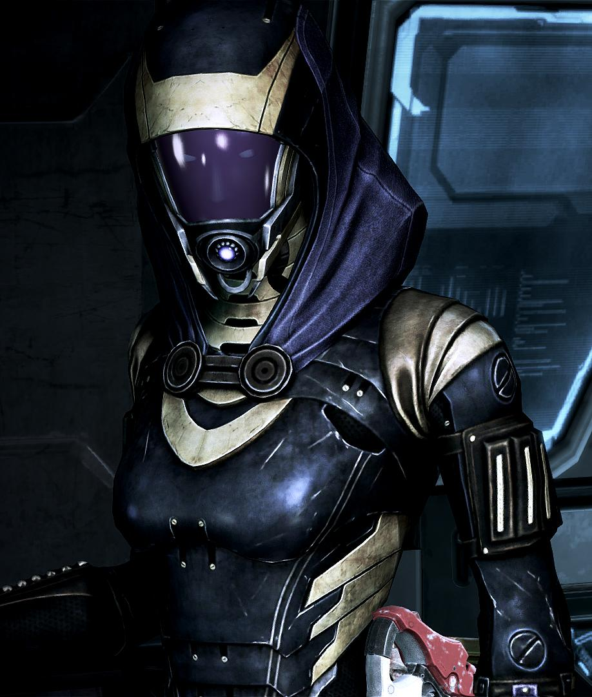
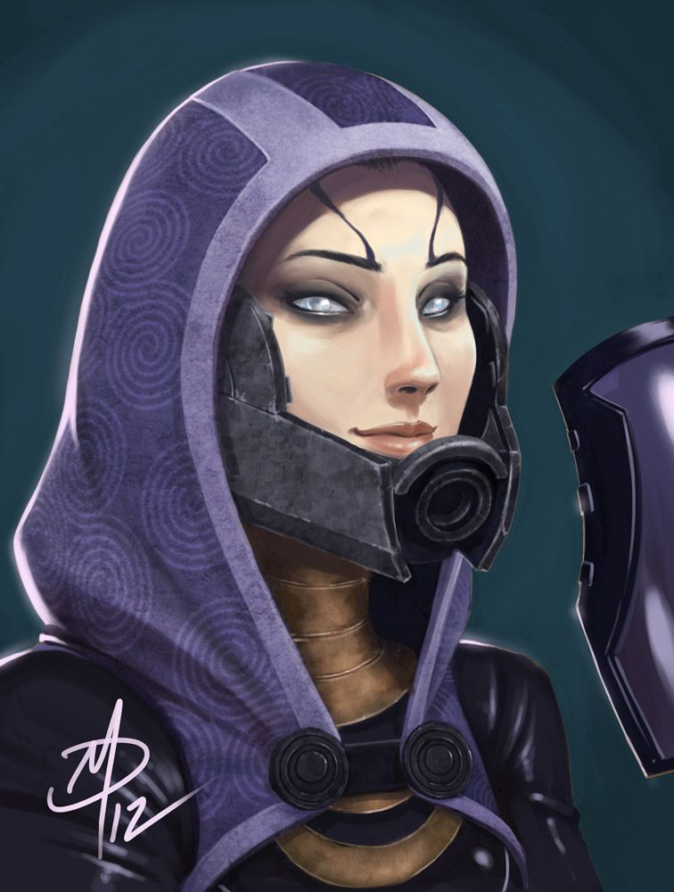

Рандом ілюстрації:

«Go get ‘em, Chatika! Good girl!»

«Я з клану Зора, з команди корабля „Німа“. А ти — кретин!»
Hailing from the world of Rannoch, the quarians were always a technologically capable species. They created the geth around the late 1850s CE to be used as labourers and tools of war. The quarians kept their programming as limited as that of any VI, nothing close to an AI, remaining mindful of the Citadel Council's laws against artificial intelligence. But as the quarians gradually modified the geth to do more complex tasks, developing a sophisticated neural network, these changes altered the geth to such an extent that they became sentient. One day, a geth unit began asking its overseer questions about the nature of its existence. According to Legion, while this was not the first time a geth unit had asked if it had a soul, it was the first time doing so had caused fear. Panicked, the quarian government ordered the immediate termination of all geth in the hopes of preventing a revolution. Many quarians opposed the termination of the geth, but were forced to give up or terminate their geth servants. After the quarian government declared martial law on Rannoch, those who sympathized with the geth were outnumbered, and an indeterminate number of them were either detained or killed. The quarian sympathizers have since been forgotten by their own people, though they are remembered by the geth themselves.
Consensus - quarian sympathizersThe quarians severely underestimated the power and sophistication of the geth's neural network. The geth reacted to defend themselves, and the resulting confrontation erupted into a planetwide war. Billions of quarians died, and the survivors were eventually driven from their homeworld. The only reason quarians were able to escape was because after they had fled to a certain distance, the geth no longer recognized them as a threat and ceased pursuit. After being refused aid by the Citadel Council, the quarians fled the system in what remained of their fleet. Shortly thereafter, the Council stripped the quarians of their embassy as punishment for their carelessness, though a treaty was agreed upon forbidding an attack on the geth in order to avoid provoking them. Ever since, the quarians have drifted from system to system, searching for resources to sustain the Migrant Fleet and also for a new world to colonize. They even retain hopes of someday reclaiming Rannoch from the geth.
The quarians' top priority is the survival and sustainability of the Migrant Fleet. Most of their laws and customs revolve around this goal. It is illegal for couples to have more than one child, so that the fleet can maintain zero population growth (if the population begins to shrink, this rule is temporarily lifted, and incentives may be provided to encourage multiple births). Families are thus very small and close-knit. Homosexual relationships are not unheard of, however, as evidenced by Shio'Leth vas Novarra and his husband Viegle.
Because every quarian depends on his or her crewmates to survive, they are much more community-minded than individualistic species like the krogan. Loyalty, trust, and cooperation are highly prized qualities. Even in their ancient past they were very emotional people, which the Protheans believed was a side-effect of their eco-symbiotic society.
Quarians enjoy storytelling as a means of escape from their often trying lives aboard the fleet, and are known to hold dancers in high esteem.